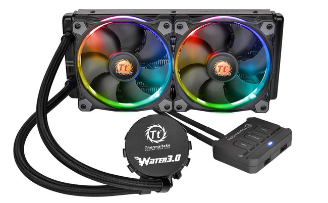

Los refrigerantes son componentes esenciales en los sistemas de computación, encargados de mantener temperaturas óptimas en los diferentes elementos del hardware, como el procesador y la tarjeta gráfica, para evitar el sobrecalentamiento y garantizar un rendimiento adecuado. Existen dos tipos principales de refrigeración: refrigeración por aire y refrigeración líquida.
La refrigeración por aire utiliza ventiladores y disipadores de calor para transferir el calor fuera de los componentes. Este tipo de refrigeración es común y suele ser más asequible, además de ser más fácil de instalar y mantener. Por otro lado, la refrigeración líquida utiliza un sistema de líquido refrigerante que circula a través de un bloque de agua en el procesador o GPU, disipando el calor de manera más eficiente. Aunque esta opción puede ofrecer un mejor rendimiento térmico, suele ser más cara y compleja de instalar.
Al elegir un refrigerante, es importante considerar factores como la compatibilidad con la placa madre, el nivel de ruido, la facilidad de instalación y el rendimiento térmico que se desea alcanzar. Un buen sistema de refrigeración puede mejorar la longevidad del hardware y permitir un rendimiento óptimo, especialmente en tareas exigentes como juegos o edición de video.
Marcas de refrigerantes: Las principales marcas de refrigeración incluyen Noctua, reconocida por sus ventiladores silenciosos y eficientes; Corsair, que ofrece soluciones de refrigeración líquida todo en uno (AIO) y ventiladores de alto rendimiento; Cooler Master, que destaca por sus sistemas de refrigeración por aire y líquida, ofreciendo una buena relación calidad-precio; be quiet!, conocida por sus productos de refrigeración que operan de manera muy silenciosa; NZXT, que se especializa en refrigeración líquida AIO con un diseño atractivo y buen rendimiento; y Thermaltake, que ofrece una amplia gama de soluciones de refrigeración, incluidas opciones RGB personalizables y sistemas de refrigeración líquida.
Volver